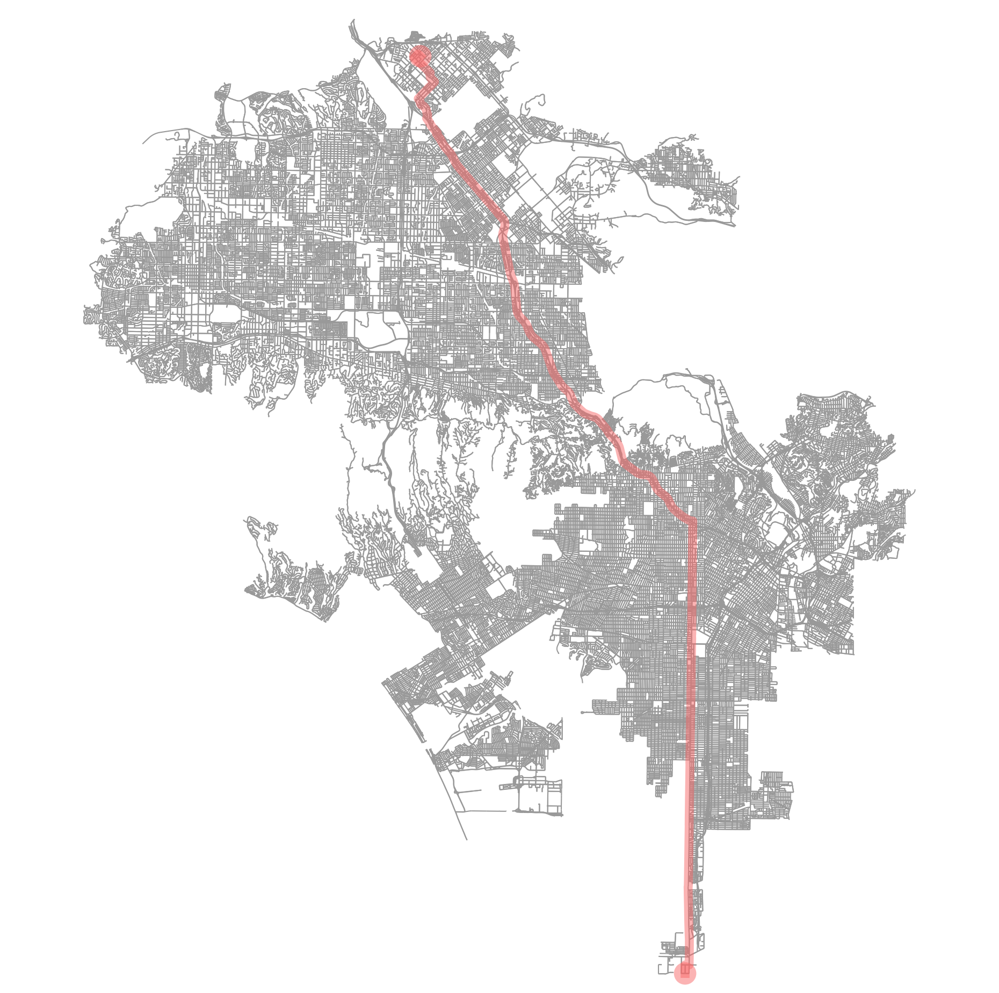

ROUTE POINTS
Source: (33.71685, -118.292293)
Destination: (34.315587, -118.462581)
Total Distance: 59725.4 meters
Route calculated in 0.658 seconds using Dijkstras

DIRECTIONS
Travel Northwest for 486 meters along Magellan Drive
Turn left onto Knox Street
Travel Northeast for 221 meters along Knox Street
Turn left onto South Vermont Avenue
Travel North for 7326 meters along South Vermont Avenue
Slight left onto Vermont Avenue
Travel North for 891 meters along Vermont Avenue
Turn right onto ['Vermont Avenue', 'South Vermont Avenue']
Travel Northwest for 131 meters along ['Vermont Avenue', 'South Vermont Avenue']
Turn left onto South Vermont Avenue
Travel North for 3719 meters along South Vermont Avenue
Turn right onto ['S Vermont Avenue', 'South Vermont Avenue']
Travel Northwest for 97 meters along ['S Vermont Avenue', 'South Vermont Avenue']
Turn left onto S Vermont Avenue
Travel Northeast for 342 meters along S Vermont Avenue
Turn left onto ['S Vermont Avenue', 'South Vermont Avenue']
Travel North for 112 meters along ['S Vermont Avenue', 'South Vermont Avenue']
Turn right onto South Vermont Avenue
Travel Northeast for 228 meters along South Vermont Avenue
Turn right onto ['S Vermont Avenue', 'South Vermont Avenue']
Travel Northwest for 97 meters along ['S Vermont Avenue', 'South Vermont Avenue']
Slight left onto S Vermont Avenue
Travel Northwest for 228 meters along S Vermont Avenue
Turn left onto South Vermont Avenue
Travel North for 312 meters along South Vermont Avenue
Slight left onto ['S Vermont Avenue', 'South Vermont Avenue']
Travel North for 80 meters along ['S Vermont Avenue', 'South Vermont Avenue']
Slight right onto S Vermont Avenue
Travel North for 667 meters along S Vermont Avenue
Turn right onto Vermont Avenue
Travel Northwest for 6443 meters along Vermont Avenue
Slight right onto South Vermont Avenue
Travel Northwest for 3641 meters along South Vermont Avenue
Slight left onto North Vermont Avenue
Travel Northwest for 699 meters along North Vermont Avenue
Slight left onto ['North Vermont Avenue', 'Vermont Avenue']
Travel Northwest for 168 meters along ['North Vermont Avenue', 'Vermont Avenue']
Turn left onto Vermont Avenue
Travel North for 51 meters along Vermont Avenue
Turn right onto Hollywood Freeway
Continue Northwest onto Hollywood Freeway for 271 meters
Slight right onto Hollywood Freeway
Travel Northwest for 9211 meters along Hollywood Freeway
Slight right onto Hollywood Freeway
Continue Northwest onto Hollywood Freeway for 785 meters
Slight right onto Hollywood Freeway
Travel Northwest for 11790 meters along Hollywood Freeway
Slight left onto Golden State Freeway
Travel Northwest for 5165 meters along Golden State Freeway
Slight right onto San Fernando Mission Boulevard
Continue Northwest onto San Fernando Mission Boulevard for 485 meters
Turn left onto San Fernando Mission Boulevard
Travel Northeast for 65 meters along San Fernando Mission Boulevard
Turn right onto Laurel Canyon Boulevard
Travel Northwest for 1035 meters along Laurel Canyon Boulevard
Turn left onto Edgecliff Avenue
Travel Northeast for 1317 meters along Edgecliff Avenue
Slight left onto Polk Street
Travel Northeast for 1330 meters along Polk Street
Turn right onto Norris Avenue
Travel Northwest for 318 meters along Norris Avenue
Slight right onto Ryan Street
Travel Northwest for 298 meters along Ryan Street
Slight left onto Herrick Avenue
Travel Northwest for 1232 meters along Herrick Avenue
Turn left onto Roxford Street
Travel Northeast for 285 meters along Roxford Street
Turn right onto None
Travel Southeast for 181 meters along None